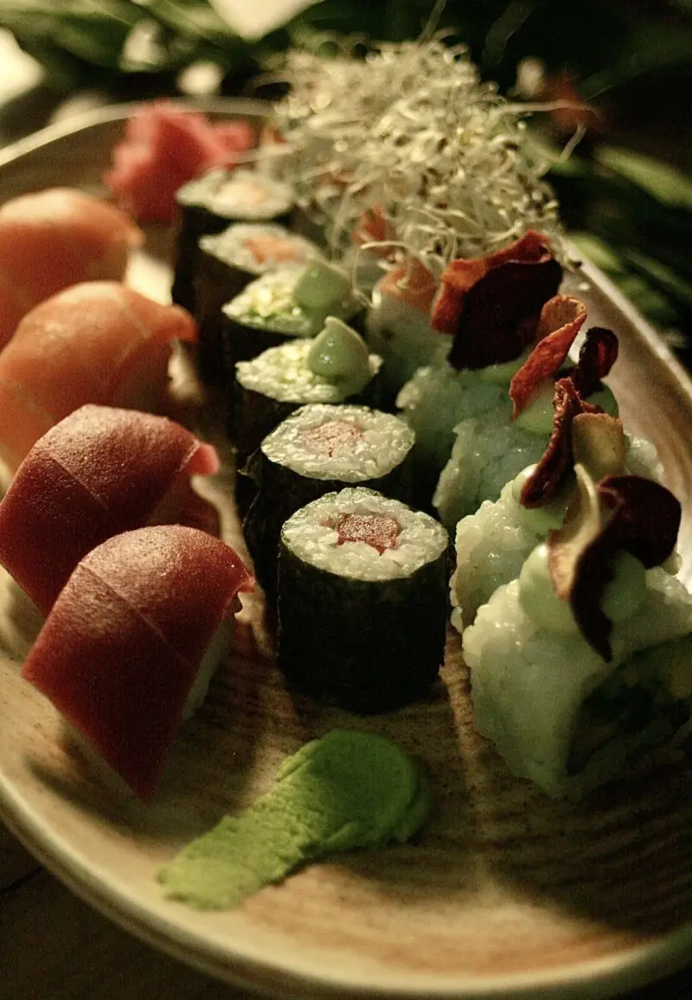

100% plant-based
Toda la carta es vegetal, sin excepciones. Atún, salmón y quesos son elaboraciones propias hechas a partir de plantas.
El resultado de la pasión por la cocina y del respeto por los animales.
The Vegan Roll es mucho más que un restaurante: es la visión de Javier, maestro del sushi con más de diez años de experiencia, que decidió unir sus dos amores, el arte de crear sushi excepcional y el compromiso con un estilo de vida vegano.
De esa idea nació una experiencia culinaria que celebra los sabores y las texturas de la cocina vegetal. Cada roll, cada bocado, es una pieza pensada para que disfrute tanto el paladar como la conciencia.
Aquí el sushi trasciende la tradición: creatividad y sostenibilidad se combinan en una carta que destaca por su frescura y por su compromiso con ingredientes veganos, ecológicos y naturales.
Pero no somos solo un sitio para calmar el antojo. Somos un espacio donde la comunidad vegana y los curiosos por igual pueden explorar formas de comer más éticas y saludables, sin sermones y con muy buen sabor.
Creemos que cada elección de comida es una oportunidad para cambiar algo. Te invitamos a comprobar que comer vegetal no es una renuncia: es una declaración de compasión hacia los animales y el planeta.
Más de diez años de barra, primero con pescado y después sin él. La misma técnica, el mismo arroz templado, el mismo corte limpio. Cambia el producto, no el oficio.
ver la cartaToda la carta es vegetal, sin excepciones. Atún, salmón y quesos son elaboraciones propias hechas a partir de plantas.
Trae a tu mejor amigo de cuatro patas. Ambiente acogedor y libre de crueldad para todos.
Opciones sin gluten avisando al reservar, recogida en local y reparto a domicilio con Glovo.

Un local pequeño en pleno centro, a dos minutos del Teatro Real. Mesas para compartir, barra para ver montar cada pieza y una playlist que no baja el ánimo. Ven a comer, a cenar o a celebrar algo: la mesa ya te espera.
reserva tu mesaDesde el 21 de diciembre de 2022